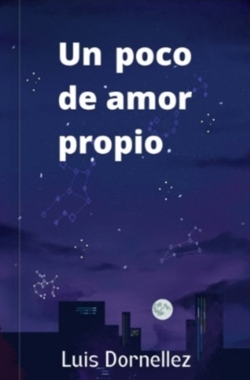

Un poco de amor propio
Un libro de poesía para sanar, reflexionar y volver a encontrarte contigo mismo.
$13,22 USDLeer un adelanto
No mires atrás y deja esos miedos, es hora de avanzar y sanar. Eres fuerte con esas ganas de nunca rendirte, incluso con tantas piedras en el camino. Veo felicidad en ti, veo una persona increíble, solo mírate al espejo y visualiza todas las veces que pudiste levantarte. Eres lo más hermoso de esta vida, por favor, no te rindas.De «Un poco de amor propio», de Luis Dornellez